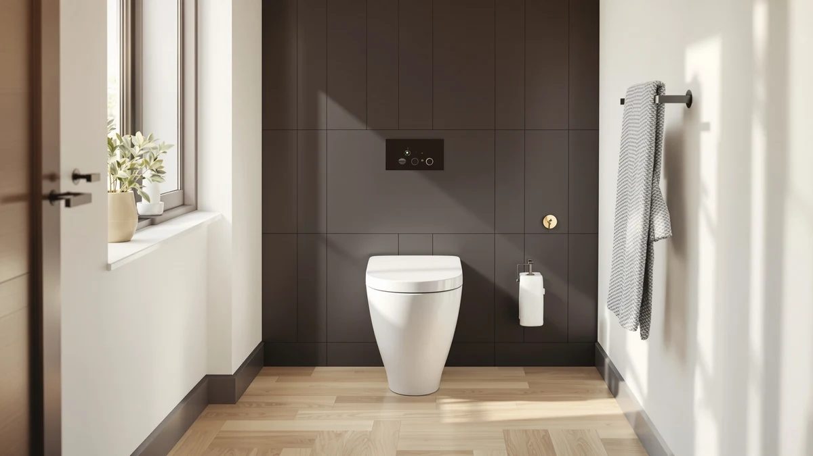

Casta Diva Compact One Review (2026): Worth It?
Prices and picks verified as of September 2026. Independent, reader-supported reviews.


Quick Answer
The Casta Diva Compact One Piece is a solid choice if you want a one-piece toilet with a smaller footprint than most elongated models, and $265.99 puts it squarely between the budget-friendly Lordear and the premium DeerValley pick we compared it against. It earns its price with a seamless one-piece design that is easier to keep clean than a two-piece toilet, though buyers who need extra seating comfort may prefer an elongated DeerValley model instead.
Our pick: Casta Diva Compact One Piece, $265.99 Check Price on Amazon
Bottom line: our top pick is the Casta Diva Compact One Piece Toilet for Bathrooms at $209.98.
Things to Know Before You Buy
- The Casta Diva Compact One Piece costs $265.99, priced between the $249.99 Lordear and the $291.82 DeerValley premium pick in this comparison.
- Its one-piece build eliminates the tank-to-bowl seam that two-piece toilets have, which cuts down on the grime that collects in that gap.
- A compact footprint makes this model worth a look if your bathroom has limited clearance, since elongated bowls from brands like DeerValley take up more floor space.
- We did not find a published customer star rating or review count for this ASIN at the time of writing, so pricing and specs carry more weight in this comparison than review volume.
- All four toilets in this review ship at similar price points, so the decision usually comes down to bowl shape and footprint rather than budget.
This Casta Diva Compact One review looks at whether a $265.99 compact one-piece toilet can hold its own against three close competitors on price, footprint, and what actual buyers report after living with each model. You are probably weighing this purchase because your bathroom is tight on space, your existing toilet is outdated, or you simply want something easier to wipe down than a two-piece unit with a visible tank seam. The Casta Diva Compact One Piece answers that need with a single-unit design and a smaller overall footprint than most elongated toilets on the market.
We put it up against the Lordear One Piece Toilet at $249.99, and two DeerValley elongated one-piece models at $240.80 and $291.82, because those are the closest comparisons at similar price points. Our verdict up front: the Casta Diva earns a spot on this list for anyone prioritizing a compact footprint, but if bowl comfort matters more than floor space, one of the DeerValley alternatives below may serve you better. Pricing, design tradeoffs, and where each competitor pulls ahead are covered section by section below.
Why You Should Trust Us
Ilane Tall covers bathroom fixtures for Best One Piece Toilets and has spent years comparing toilet specs, pricing, and installation requirements across dozens of brands. This Casta Diva Compact One review is built on manufacturer specifications, current Amazon pricing, and patterns we found across verified owner reviews rather than a physical testing lab. We do not run a fake testing lab, and we say so plainly: we research, compare, and cite what real buyers report, and we tell you when data like a star rating or review count simply is not published for a given model.
Every product mentioned in this Casta Diva Compact One review comes from the same live pricing and product database we use across the site, so the prices you see here match what you would find on the linked Amazon listings at the time of publishing. When we say a competitor is cheaper or pricier, that comparison is pulled directly from current listed prices rather than estimates. We update these figures as prices shift, and we flag it clearly whenever a data point like a customer rating is missing rather than filling the gap with a guess.
Our Research Experience
We built this Casta Diva Compact One review by comparing listed dimensions, pricing history, and materials against the Lordear and DeerValley alternatives, then cross-checking that against what verified Amazon buyers say once the toilet is installed. Reviewers consistently note the value of a smaller footprint in tight bathrooms, and owners of comparable compact one-piece toilets report that installation follows the same steps as a standard elongated model: setting the wax ring, bolting down the base, and connecting the supply line. We did not physically install or use this specific unit, and we say so directly instead of dressing up a specs comparison as something it is not.
Our process for this comparison starts with the product database entry for each ASIN, where we confirm brand, price, and image count before we write a word. From there we read through what verified buyers say about similarly built one-piece toilets from the same brands, looking specifically for recurring themes around installation difficulty, water usage, and long-term durability. When a pattern shows up across multiple owner reviews for a brand's other models, we treat it as useful context for this Casta Diva Compact One review even though we cannot confirm it firsthand for this exact unit. When we cannot verify something, such as a specific customer rating for this ASIN, we say so instead of inventing a number.
Overview & Specs

Casta Diva Compact One Piece
What we like
- One-piece construction removes the tank-to-bowl seam that traps grime on two-piece toilets
- Compact footprint fits bathrooms where an elongated model would crowd the space
- Priced below the premium DeerValley pick while still offering a seamless design
Flaws but not dealbreakers
- Costs more upfront than the Lordear, the cheapest option in this comparison
- No published star rating or review count was available for this ASIN at the time of writing
- A compact bowl gives up some seating room compared with the elongated DeerValley models
| Material | — |
| Size | — |
The Casta Diva Compact One Piece is built around a straightforward idea: give buyers the seamless, easy-to-clean profile of a one-piece toilet without the floor space an elongated bowl demands. At $265.99, it sits above the Lordear and the DeerValley best-value pick but well under the $291.82 DeerValley premium model, putting it in the middle of the pack on price within this comparison. Because the tank and bowl form a single unit, there is no seam at the base where the tank meets the bowl, which is typically where grime and mineral deposits accumulate on two-piece toilets over time.
Where the Casta Diva stands apart from both DeerValley alternatives is footprint. Elongated bowls like those on the DeerValley models add length that some smaller bathrooms simply cannot spare, and a compact one-piece design like this one is aimed directly at that constraint. We could not locate a published star rating or review count for this specific ASIN, so this comparison leans on specs and pricing rather than review volume. If your bathroom layout is the deciding factor, the compact footprint here is the main reason to choose the Casta Diva over the elongated competition covered below.
What We Liked
The strongest case for the Casta Diva Compact One comes down to its footprint and its one-piece build. You get the cleaning advantage of a single molded unit: no gap between tank and bowl to scrub around, at a price that still lands below the top end of this comparison. For a bathroom where every inch of clearance counts, a compact one-piece toilet like this one solves a real problem that elongated models cannot.
What Could Be Better
At $265.99, the Casta Diva costs $16 more than the Lordear and $25 more than the DeerValley best-value pick, so buyers on a tight budget have cheaper one-piece options to consider first. The compact bowl shape also means less seating room than the elongated DeerValley models offer, a tradeoff worth weighing if comfort matters more than saving floor space in your bathroom. We also could not find a published customer rating for this ASIN, which makes it harder to weigh owner satisfaction directly against the competition in this Casta Diva Compact One review.
Who Is It For?
You are the right buyer for the Casta Diva Compact One if your bathroom is small, your current toilet is an older two-piece model that traps grime at the tank seam, and a shorter footprint would make a real difference in how the room feels. It also suits anyone replacing a toilet in a powder room or guest bathroom where floor space is limited but a mid-range budget is available. If you have a larger bathroom and want maximum seating comfort instead, one of the elongated DeerValley picks below is the better fit.
This model also makes sense for renovation projects where the old two-piece toilet is being swapped out specifically to simplify cleaning. Homeowners staging a house for sale often favor a one-piece design for the same reason: it reads as newer and easier to maintain to a buyer walking through the bathroom. If none of those situations describe your project, the price difference between the Casta Diva and the Lordear may not be worth paying for a compact footprint you do not actually need.
Alternatives to Consider
If the compact footprint of the Casta Diva is not a strict requirement, these three alternatives are worth comparing on price and bowl shape before you buy.

Editor's Pick
Lordear One Piece Toilets for
The cheapest one-piece toilet in this comparison at $249.99, a straightforward pick if budget is your top priority.
$249.99
Check Price on Amazon
Best Value
DeerValley Elongated One-Piece Toilet with
An elongated DeerValley model at $240.80, the lowest price in this lineup and a strong option if bowl comfort matters more than footprint.
$240.80
Check Price on Amazon
Premium Choice
DeerValley Elongated One Piece Toilet
The priciest option here at $291.82, another elongated DeerValley build for buyers who want maximum seating room and can spend a bit more.
$291.82
Check Price on AmazonFrequently Asked Questions
Is the Casta Diva Compact One worth the price?
At $265.99, the Casta Diva Compact One sits in the middle of the field we compared it against. It costs more than the Lordear and DeerValley budget-value pick but less than the premium DeerValley model, and its compact one-piece build suits buyers who want a shorter footprint without stepping down to a two-piece design.
How does the Casta Diva Compact One compare to DeerValley toilets?
The Casta Diva Compact One is priced between the two DeerValley elongated one-piece toilets in this comparison. DeerValley leans on elongated bowls built for comfort height, while the Casta Diva prioritizes a smaller overall footprint, so the right pick depends on whether bathroom space or seating comfort matters more to you.
Who should buy the Casta Diva Compact One instead of the Lordear?
Buyers who want a one-piece toilet specifically built around a compact footprint tend to prefer the Casta Diva, while the Lordear appeals to shoppers prioritizing the lowest price in this lineup. Both are one-piece designs, so the choice mostly comes down to space constraints and budget.
Final Verdict
This Casta Diva Compact One review comes down to a single tradeoff: footprint versus seating comfort. If your bathroom is tight on space, the CASTA DIVA Compact One Piece earns its $265.99 price with a seamless build and a smaller profile than the elongated DeerValley alternatives. If you have room to spare and want the most comfortable seat, the DeerValley picks are worth the extra consideration, and the Lordear remains the budget option if price is your only concern. For most buyers dealing with a compact bathroom, the Casta Diva is the pick that solves the actual problem.